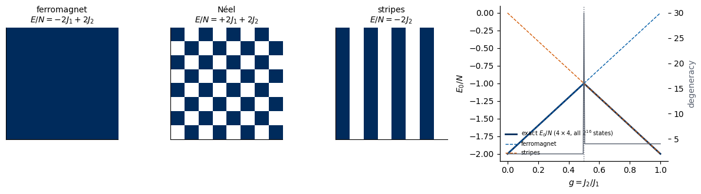
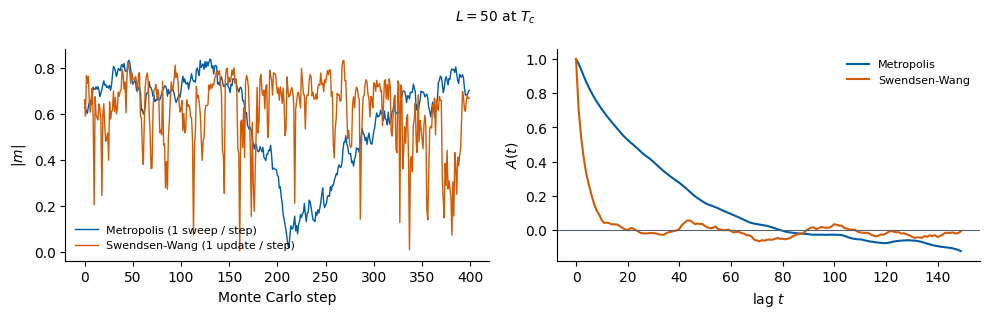
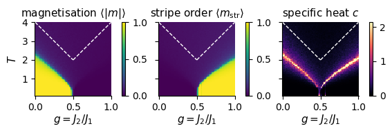
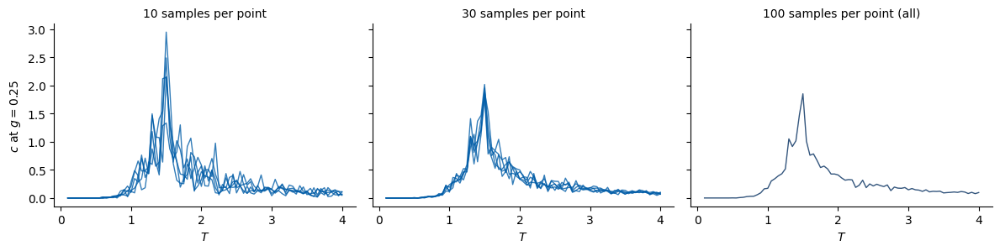

Lab 018 — Classical spin models in JAX: the 2D Ising and the frustrated \(J_1\)–\(J_2\) model
In Lecture 4 a network trained with labels found the critical temperature of the 2D Ising model. In Lecture 5 we drop the labels. Before any learning, we need data, and we need to know the physics well enough to judge what the learning algorithms tell us.
This notebook is about classical spin models. Every spin is a number \(s_i=\pm1\); a configuration \(\boldsymbol s\) is a definite “photograph” of the system, and thermal equilibrium is the Boltzmann distribution over such photographs. Monte Carlo samples this distribution exactly (up to statistical errors). Quantum spin models, with non-commuting operators, superpositions, and snapshots produced by projective measurements, come later in the course.
Plan: 1. Physics of the \(J_1\)–\(J_2\) model: competing couplings, ground states, frustration at \(g=J_2/J_1=1/2\), order parameters, and what mean-field theory and the literature say about the finite-temperature phase diagram. 2. Monte Carlo in JAX: a Metropolis sampler written with jit, vmap and lax.scan that runs hundreds of independent chains in parallel. 3. Two datasets used in Labs 019 and 020: the 2D Ising model for several lattice sizes (finite-size scaling), and the \(J_1\)–\(J_2\) model on a grid in the \((g,T)\) plane. 4. The physicist’s scan of the \((g,T)\) plane: which quantity should we plot, and how expensive is a dense scan?
Running in Google Colab. Run the cells in order; JAX is pre-installed in Colab and the notebook runs on the CPU. All datasets are written to data/ and figures to ../beamer/figures/ (created if missing). The two dataset cells take a few minutes each.
Code
import osos.environ["JAX_PLATFORMS"] ="cpu"# the whole notebook runs on the CPUimport time, json, itertoolsfrom functools import partialimport numpy as npimport matplotlib.pyplot as pltfrom matplotlib.colors import ListedColormapfrom scipy.special import ellipkimport jaximport jax.numpy as jnpfrom jax import laxprint("JAX", jax.__version__, "| devices:", jax.devices())UJBlue, UJNavy, DSOrange, UJGray ="#005CA7", "#002B5C", "#D35A05", "#5A6270"SPIN_CMAP = ListedColormap(["#FFFFFF", UJNavy]) # s = -1 white, s = +1 navyplt.rcParams.update({"axes.spines.top": False, "axes.spines.right": False, "font.size": 10})FIG ="figures"; os.makedirs(FIG, exist_ok=True)DATA ="data"; os.makedirs(DATA, exist_ok=True)NUMBERS = {} # numbers quoted on the slides, saved at the endsavefig =lambda fig, name: fig.savefig(f"{FIG}/{name}", dpi=200, bbox_inches="tight")TC_ISING =2.0/ np.log(1.0+ np.sqrt(2.0)) # Onsager: exact T_c of the 2D Ising model (J = k_B = 1)print(f"Onsager T_c = 2 / ln(1 + sqrt 2) = {TC_ISING:.6f}")
Spins \(s_i=\pm1\) sit on an \(L\times L\) square lattice with periodic boundaries. Every spin has four nearest neighbours (left, right, up, down) and four next-nearest neighbours (along the diagonals). The energy is \[
H(\boldsymbol s) = -J_1\sum_{\langle i,j\rangle} s_i s_j \;+\; J_2\sum_{\langle\langle i,j\rangle\rangle} s_i s_j ,
\qquad J_1>0,\quad J_2\ge 0,
\] with \(\langle i,j\rangle\) the \(2N\) nearest-neighbour bonds and \(\langle\langle i,j\rangle\rangle\) the \(2N\) diagonal bonds (\(N=L^2\)).
\(J_1>0\) is ferromagnetic: nearest neighbours want to be parallel.
\(J_2>0\) (with the \(+\) sign in \(H\)) is antiferromagnetic: diagonal neighbours want to be antiparallel.
We set \(J_1=1\) and use the single control parameter \[
g = J_2/J_1 .
\] Together with the temperature \(T\) (with \(k_B=1\)) this gives a two-dimensional phase diagram in the \((g,T)\) plane.
Two limits we already understand. * \(g=0\): the 2D Ising model, solved exactly by Onsager, with \(T_c=2/\ln(1+\sqrt2)\approx 2.269\). * \(g\to\infty\) (\(J_1\to0\)): only diagonal bonds remain. The diagonal bonds connect sites of the same chessboard colour, so the lattice splits into two independent square lattices (rotated by \(45^\circ\)), each an antiferromagnetic Ising model with coupling \(J_2\). Flipping every second spin of such a lattice maps the antiferromagnet onto a ferromagnet with the same partition function, so each sub-lattice orders at \(T = J_2\,T_c^{\rm Ising}\), i.e. \(T_c/J_1 \to g\,T_c^{\rm Ising}\) for large \(g\).
Between these limits the two couplings compete, and that is where the interesting physics is.
1.1 Ground states: who wins at \(T=0\)
Consider three candidate patterns and count the bonds per spin (2 nearest-neighbour bonds and 2 diagonal bonds per spin):
pattern
nearest-neighbour bonds
diagonal bonds
energy per spin \(E/N\)
ferromagnet (all up)
all satisfied: \(s_is_j=+1\)
all frustrated: \(s_is_j=+1\)
\(-2J_1+2J_2\)
Néel (chessboard)
all broken: \(s_is_j=-1\)
\(s_is_j=+1\)
\(+2J_1+2J_2\)
stripes (columns \(+,-,+,-\))
horizontal \(-1\), vertical \(+1\): net \(0\)
all satisfied: \(s_is_j=-1\)
\(-2J_2\)
The Néel state is never favourable for \(J_1>0\). The ferromagnet and the stripe state have equal energy when \(-2J_1+2J_2=-2J_2\), i.e. at \[
g = \tfrac12 .
\] For \(g<1/2\) the ground state is ferromagnetic (2 states: all up, all down). For \(g>1/2\) it is the stripe (also called collinear or super-antiferromagnetic) state: 4 states (vertical or horizontal stripes, and the global flip).
At exactly \(g=1/2\) a single ferromagnetic row can be inserted into a stripe pattern at no energy cost, and many mixed patterns become degenerate: the system is frustrated, it cannot satisfy both couplings, and the number of ground states grows exponentially with the system size.
The table only compared three guesses. On a small lattice we can check all\(2^{N}\) configurations, which is a good first exercise in JAX.
1.2 Exhaustive check on a \(4\times4\) lattice (a first look at vmap and jit)
A \(4\times4\) lattice has \(2^{16}=65\,536\) configurations. We write the energy of one configuration, then let jax.vmap turn it into a function of a whole batch, and jax.jit compile it.
Two building blocks are used throughout the notebook: * jnp.roll(s, 1, axis) shifts the lattice by one site with periodic wrap-around, so s * jnp.roll(s, 1, 0) lists the products over all vertical bonds at once; * the energy splits into two integers, \(H = -J_1\,B_1(\boldsymbol s) + J_2\,B_2(\boldsymbol s)\), with \(B_1=\sum_{\langle ij\rangle}s_is_j\) and \(B_2=\sum_{\langle\langle ij\rangle\rangle}s_is_j\). We compute \(B_1\), \(B_2\) once and then get \(H\) for every\(g\) for free.
(65536, 4, 4) configurations; B1 range -32 32 ; B2 range -32 32
g = 0.00: E0/N = -2.0000 ground-state degeneracy = 2
g = 0.25: E0/N = -1.5000 ground-state degeneracy = 2
g = 0.50: E0/N = -1.0000 ground-state degeneracy = 30
g = 0.75: E0/N = -1.5000 ground-state degeneracy = 4
g = 1.00: E0/N = -2.0000 ground-state degeneracy = 4
The exhaustive search confirms the table: \(E_0/N = -2+2g\) for \(g<1/2\) (2 ferromagnetic states), \(E_0/N=-2g\) for \(g>1/2\) (4 stripe states), and a jump of the degeneracy at \(g=1/2\). On larger lattices that number grows exponentially with \(L\); a \(4\times4\) lattice only hints at it.
Code
L_draw =8x, y = np.meshgrid(np.arange(L_draw), np.arange(L_draw), indexing="ij")patterns = {"ferromagnet": np.ones((L_draw, L_draw)),"Néel": (-1.0) ** (x + y),"stripes": (-1.0) ** y}# one of the degenerate ground states at g = 1/2: stripes with one ferromagnetic column pair insertedig = np.argmin(abs(g_scan -0.5))gs_half = np.asarray(S4)[E[ig] <= E0[ig] +1e-9]fig = plt.figure(figsize=(12, 3.4))gsp = fig.add_gridspec(1, 4, width_ratios=[1, 1, 1, 1.5])for k, (name, p) inenumerate(patterns.items()): ax = fig.add_subplot(gsp[k]) ax.imshow(p, cmap=SPIN_CMAP, vmin=-1, vmax=1) e = {"ferromagnet": r"$E/N=-2J_1+2J_2$", "Néel": r"$E/N=+2J_1+2J_2$", "stripes": r"$E/N=-2J_2$"}[name] ax.set_title(f"{name}\n{e}", fontsize=10); ax.set_xticks([]); ax.set_yticks([])ax = fig.add_subplot(gsp[3])ax.plot(g_scan, E0 /16, color=UJNavy, lw=2, label=r"exact $E_0/N$ ($4\times4$, all $2^{16}$ states)")ax.plot(g_scan, -2+2* g_scan, "--", color=UJBlue, lw=1, label="ferromagnet")ax.plot(g_scan, -2* g_scan, "--", color=DSOrange, lw=1, label="stripes")ax.axvline(0.5, color=UJGray, ls=":", lw=1)ax2 = ax.twinx(); ax2.plot(g_scan, degeneracy, color=UJGray, lw=1); ax2.set_ylabel("degeneracy", color=UJGray)ax2.spines["top"].set_visible(False)ax.set_xlabel("$g=J_2/J_1$"); ax.set_ylabel("$E_0/N$"); ax.legend(frameon=False, fontsize=7, loc="lower left")fig.tight_layout(); savefig(fig, "gen_j1j2_ground_states.png"); plt.show()print(f"{len(gs_half)} degenerate ground states of the 4x4 lattice at g = 1/2")

30 degenerate ground states of the 4x4 lattice at g = 1/2
1.3 Order parameters: what distinguishes the phases
Each ordered phase is characterised by a quantity that is non-zero in that phase and zero elsewhere, an order parameter. For ordering patterns that repeat with a wave vector \(\boldsymbol k\) the natural choice is the Fourier component of the spins, \[
m_{\boldsymbol k}(\boldsymbol s) = \frac1N\sum_{\boldsymbol r} s_{\boldsymbol r}\, e^{i\boldsymbol k\cdot\boldsymbol r},
\] and its square summed over many \(\boldsymbol k\) is the static structure factor\(S(\boldsymbol k)=N\langle|m_{\boldsymbol k}|^2\rangle\), measured in neutron scattering.
The stripe order parameter combines the two wave vectors because vertical and horizontal stripes have the same energy.
The key point for this lecture. The magnetisation \(m\) is zero in the stripe phase: half of the spins are up and half are down. A scan of \(\langle|m|\rangle\) over the \((g,T)\) plane therefore sees the stripe phase as “disordered”. To see it, one has to know that stripes exist and measure \(m_{\rm str}\). For the \(J_1\)–\(J_2\) model we know this from the ground-state analysis. For a new material or a new model we often do not know which quantity to plot.
Code
def order_parameters(s):# s: (..., L, L) with values +-1. Returns |m|, m_stripe, m_neel, and energy terms B1, B2 per spin. L = s.shape[-1] ph = jnp.where(jnp.arange(L) %2==0, 1.0, -1.0) # e^{i pi x} = (-1)^x m = s.mean((-2, -1)) m_pi0 = (s * ph[:, None]).mean((-2, -1)) # k = (pi, 0) m_0pi = (s * ph[None, :]).mean((-2, -1)) # k = (0, pi) m_pipi = (s * ph[:, None] * ph[None, :]).mean((-2, -1)) # k = (pi, pi)return {"m": jnp.abs(m), "m_str": jnp.sqrt(m_pi0**2+ m_0pi**2), "m_neel": jnp.abs(m_pipi)}for name, p in patterns.items(): o = order_parameters(jnp.asarray(p))print(f"{name:12s} |m| = {float(o['m']):.2f} m_str = {float(o['m_str']):.2f} m_Neel = {float(o['m_neel']):.2f}")
1.4 Finite temperature: mean-field theory and its failure at \(g=1/2\)
Mean field. Replace the neighbours of spin \(i\) by their thermal averages \(\langle s_j\rangle\). The spin then feels the field \[
h_i = J_1\sum_{j\in{\rm nn}(i)}\langle s_j\rangle - J_2\sum_{j\in{\rm nnn}(i)}\langle s_j\rangle, \qquad \langle s_i\rangle = \tanh(\beta h_i).
\] * Ferromagnetic ansatz \(\langle s_j\rangle = m\): \(h = (4J_1-4J_2)m\), so \(m=\tanh(\beta(4J_1-4J_2)m)\), which has a non-zero solution below \(T^{\rm MF}_{\rm FM} = 4J_1-4J_2 = 4(1-g)\). * Stripe ansatz (columns alternate, \(\langle s_j\rangle=\pm m\)): the nearest-neighbour contributions cancel (two parallel, two antiparallel), and all four diagonal neighbours are antiparallel, so \(h = 4J_2 m\) and \(T^{\rm MF}_{\rm str}=4J_2 = 4g\).
Mean-field theory predicts the two lines meet at \(g=1/2\) at \(T=2\). This is wrong: fluctuations between the many degenerate ground states destroy the order, and the true transition temperature goes to zero at \(g=1/2\). Mean field also overestimates \(T_c\) at \(g=0\) (\(4\) instead of \(2.269\)), because it neglects fluctuations, which are strong in two dimensions.
What is known from large-scale numerics (the questions are subtle and partly still debated): * \(g<1/2\): a continuous transition from the paramagnet to the ferromagnet, in the 2D Ising universality class, with \(T_c(g)\) decreasing to \(0\) at \(g=1/2\). * \(g>1/2\): a transition to the stripe phase. For \(g\) slightly above \(1/2\) it is weakly first order; above a multicritical point it is continuous, with exponents that vary along the line (Ashkin–Teller criticality) and approach the Ising ones as \(g\to\infty\). Kalz, Honecker, Fuchs and Pruschke (Eur. Phys. J. B 65, 533 (2008)) found weakly first-order transitions for moderate \(J_2>J_1/2\); Jin, Sen and Sandvik (Phys. Rev. Lett. 108, 045702 (2012)) and Jin, Sen, Guo and Sandvik (Phys. Rev. B 87, 144406 (2013)) placed the multicritical point at \(g^*\approx0.67\) and showed that continuous transitions above \(g^*\) can look first order on finite lattices; tensor-network calculations by Li and Yang (Phys. Rev. E 104, 024118 (2021)) suggest that the first-order window is narrower.
The lesson: even for a model this simple, the phase diagram required decades of work, careful finite-size analysis, and knowledge of the right order parameters. In Lab 020 we ask how much of it an algorithm can find without being told what to look for.
2. Metropolis Monte Carlo in JAX
Algorithm (derived in Lab 010): propose to flip spin \(i\), accept with probability \(\min(1, e^{-\beta\Delta E})\). With the local field \[
h_i = J_1\sum_{j\in{\rm nn}(i)} s_j - J_2\sum_{j\in{\rm nnn}(i)} s_j ,\qquad \Delta E_i = 2\,s_i\,h_i .
\]
Parallel updates. Spins can be flipped simultaneously only if they do not interact. For the Ising model the chessboard colouring works, but here diagonal neighbours have the same chessboard colour. We use four sub-lattices labelled by \((x \bmod 2,\, y \bmod 2)\): nearest neighbours differ in one parity, diagonal neighbours in both, so no two spins of one sub-lattice are coupled. In code a sub-lattice is the strided slice s[a::2, b::2], and we only draw random numbers for the spins we update. One sweep = four sub-lattice updates = one attempted flip per spin.
The JAX idioms. * A pure function sweep(s, key, g, beta) updates one lattice. Randomness is explicit: a PRNG key goes in, a new key comes out. * lax.scan repeats a step many times inside one compiled program, with no Python loop overhead. * jax.vmap maps the whole simulation over chains: every chain has its own \(g\) and its own random key. All values of \(g\) run at once. * jax.jit compiles the result into a single program (XLA fuses the array operations; on a GPU the same code runs unchanged).
Annealing. Each chain starts at the highest temperature and is cooled step by step; at each temperature it first equilibrates for n_equil sweeps and then stores n_samples configurations separated by n_between sweeps (to reduce correlations between stored samples). Cooling slowly, rather than starting each temperature from a random state, helps the chain find the ordered state at low \(T\).
Code
def local_field(s, g):# s: (..., L, L); the rolls act on the two lattice axes, so the same function works for one lattice or a batch nn = jnp.roll(s, 1, -2) + jnp.roll(s, -1, -2) + jnp.roll(s, 1, -1) + jnp.roll(s, -1, -1) nnn = (jnp.roll(s, (1, 1), (-2, -1)) + jnp.roll(s, (1, -1), (-2, -1))+ jnp.roll(s, (-1, 1), (-2, -1)) + jnp.roll(s, (-1, -1), (-2, -1)))return nn - g * nnn # J1 = 1, J2 = gdef energy_per_spin(s, g):return-0.5* jnp.mean(s * local_field(s, g), axis=(-2, -1)) # each bond appears twice in sum_i s_i h_idef sweep(s, key, g, beta):for a, b in ((0, 0), (0, 1), (1, 0), (1, 1)): # the four sub-lattices (a Python loop, unrolled by jit) key, sub = jax.random.split(key) si = s[a::2, b::2] dE =2.0* si * local_field(s, g)[a::2, b::2] accept = jax.random.uniform(sub, si.shape) < jnp.exp(-beta * dE) s = s.at[a::2, b::2].set(jnp.where(accept, -si, si))return s, key@partial(jax.jit, static_argnames=("n_equil", "n_samples", "n_between"))def anneal_chains(s0, keys, gs, Ts, n_equil, n_samples, n_between):# s0: (chains, L, L), keys: (chains, 2), gs: (chains,), Ts: (nT,) in the order visited.# Returns int8 samples of shape (chains, nT, n_samples, L, L).def one_chain(s, key, g):def at_T(carry, T): step =lambda c, _: (sweep(c[0], c[1], g, 1.0/ T), None) carry, _ = lax.scan(step, carry, None, length=n_equil)def store(c, _): c, _ = lax.scan(step, c, None, length=n_between)return c, c[0].astype(jnp.int8)return lax.scan(store, carry, None, length=n_samples) _, samples = lax.scan(at_T, (s, key), Ts)return samplesreturn jax.vmap(one_chain)(s0, keys, gs)def run(L, gs, Ts, n_chains, n_equil, n_samples, n_between, seed):# gs: (nG,) couplings; every g gets n_chains independent chains. Returns (nG, nT, n_chains * n_samples, L, L) int8. G = jnp.repeat(jnp.asarray(gs, jnp.float32), n_chains) k_init, k_run = jax.random.split(jax.random.PRNGKey(seed)) s0 = jnp.where(jax.random.bernoulli(k_init, 0.5, (G.size, L, L)), 1.0, -1.0) out = anneal_chains(s0, jax.random.split(k_run, G.size), G, jnp.asarray(Ts, jnp.float32), n_equil, n_samples, n_between) out = np.asarray(out).reshape(len(gs), n_chains, len(Ts), n_samples, L, L)return out.transpose(0, 2, 1, 3, 4, 5).reshape(len(gs), len(Ts), n_chains * n_samples, L, L)
2.1 Checks before production
Exact enumeration. On the \(4\times4\) lattice we know the exact thermal averages (from the \(2^{16}\) states above), for any \(g\).
Onsager. At \(g=0\) and large \(L\) the magnetisation must follow Yang’s exact result \(M(T)=\left(1-\sinh^{-4}(2/T)\right)^{1/8}\) below \(T_c\), and the energy must follow Onsager’s \(u(T)\).
Code
def exact_4x4(g, T): e = (-np.asarray(B1) + g * np.asarray(B2)) /16 o = order_parameters(S4) w = np.exp(-16* (e - e.min()) / T); w /= w.sum()return (w * e).sum(), (w * np.asarray(o["m"])).sum(), (w * np.asarray(o["m_str"])).sum()checks = [(0.0, 1.5), (0.3, 1.0), (0.5, 0.8), (0.8, 1.5), (1.0, 3.0)]t0 = time.time()for g, T in checks: smp = run(4, [g], [T], n_chains=256, n_equil=500, n_samples=50, n_between=5, seed=1)[0, 0].astype(np.float32) o = order_parameters(jnp.asarray(smp)); e = np.asarray(energy_per_spin(jnp.asarray(smp), g)) e_ex, m_ex, ms_ex = exact_4x4(g, T)print(f"g={g:.1f} T={T:.1f}: <e> {e.mean():+.4f} (exact {e_ex:+.4f}) <|m|> {float(o['m'].mean()):.4f} "f"(exact {m_ex:.4f}) <m_str> {float(o['m_str'].mean()):.4f} (exact {ms_ex:.4f})")print(f"{time.time() - t0:.1f} s")
Away from \(T_c\) the Monte Carlo points lie on the exact curves. Near \(T_c\) the finite lattice rounds the transition: \(\langle|m|\rangle\) stays non-zero above \(T_c\) because a finite system always has a finite magnetisation fluctuation. This finite-size rounding is the subject of Lab 019.
Try it. Set n_equil=50 in the cell above and look at the points just below \(T_c\). Why does the agreement get worse there first?
2.2 Critical slowing down, and the Swendsen–Wang cluster algorithm
The problem. Near \(T_c\) the lattice is made of correlated domains of all sizes up to \(L\). Metropolis flips one spin at a time, and a single flip inside a large domain is almost always rejected (it costs energy at every bond). To turn a whole domain around the chain must move its boundary step by step, which takes very many sweeps: consecutive samples are nearly copies of each other. This is critical slowing down; the autocorrelation time grows as a power of \(L\) (measured below).
The idea. Flip whole domains at once, but choose them randomly in a way that keeps the Boltzmann distribution exact. The tool is a one-line identity for the weight of a single bond, with \(p = 1-e^{-2\beta J}\): \[
e^{\beta J s_is_j} \;=\; e^{\beta J}\Big[\,(1-p) \;+\; p\,\delta_{s_i s_j}\Big].
\] (Check: for \(s_i=s_j\) the bracket is \(1\); for \(s_i\neq s_j\) it is \(1-p=e^{-2\beta J}\).) Read the two terms as a bond variable \(b_{ij}\in\{0,1\}\): “no bond” with weight \(1-p\), or “bond” with weight \(p\), allowed only between parallel spins. Multiplying over all bonds gives a joint distribution of spins and bonds whose sum over bonds is exactly \(e^{-\beta H}\) (Fortuin and Kasteleyn’s random-cluster representation). Sampling the two variables alternately is the algorithm:
bonds given spins: between every pair of parallel neighbours, place a bond with probability \(p\), independently;
spins given bonds: the only constraint is that bonded spins are equal, so every connected cluster of bonds carries one common sign, chosen independently with probability \(1/2\) for each cluster.
Each step samples exactly from a conditional distribution of the joint distribution, so the pair of steps leaves \(e^{-\beta H}\) invariant. Near \(T_c\) the clusters have all sizes, and one update can turn around a domain as large as the lattice. The method works for ferromagnetic couplings (a bond requires parallel spins to lower the energy); for the frustrated \(J_1\)–\(J_2\) model we keep Metropolis.
The cluster search in JAX. Finding connected clusters is usually a sequential graph search. In array form every site starts with a label (its own index) and we repeat two operations until nothing changes: each site takes the smallest label among itself and its bonded neighbours, and then the label of its label (pointer jumping). Each iteration is a few jnp.roll and jnp.minimum operations on the whole lattice, inside a lax.while_loop.
References: R. H. Swendsen, J.-S. Wang, Phys. Rev. Lett. 58, 86 (1987), doi:10.1103/PhysRevLett.58.86; C. M. Fortuin, P. W. Kasteleyn, Physica 57, 536 (1972); the single-cluster variant: U. Wolff, Phys. Rev. Lett. 62, 361 (1989), doi:10.1103/PhysRevLett.62.361; textbook: Newman and Barkema (references at the end).
What the clusters look like. One configuration of \(L=50\) at \(T_c\), its Swendsen–Wang clusters (each cluster in its own colour), and the configuration after one update.
How much faster? We compare the autocorrelation of \(|m|\) along one chain at \(T_c\) for \(L=50\): Metropolis with one sweep per step, Swendsen–Wang with one cluster update per step, \[
A(t) = \frac{\langle |m|_{s}\,|m|_{s+t}\rangle - \langle|m|\rangle^2}{\langle |m|^2\rangle - \langle|m|\rangle^2}.
\]
L = 50, T = T_c: integrated autocorrelation time Metropolis 26.4 sweeps, Swendsen-Wang 3.4 updates
wall time for 400 steps of 16 chains: Metropolis 9.5 s, Swendsen-Wang 151.9 s

3. Dataset 1: the 2D Ising model for several lattice sizes
For finite-size scaling (Lab 019) we need the same temperature grid for several \(L\), and nearly independent samples close to \(T_c\). We use the Swendsen–Wang sampler: 32 chains per size, each cooled through the temperature grid, 8 samples per temperature separated by 4 cluster updates. We store configurations as bits (np.packbits), eight spins per byte.
Reading the snapshots: at high \(T\) every column is noise. At low \(T\) and small \(g\) the lattice is uniformly up or down; at large \(g\) we see stripes. Near \(g=1/2\) even the lowest temperature shows a mixture of ferromagnetic and stripe patches: the frustrated region.
5. The physicist’s scan: the choice of observable
Suppose we know nothing about stripes and we do what is natural for a magnet: we measure \(\langle|m|\rangle\) at every point of the grid. Then we measure \(\langle m_{\rm str}\rangle\), which requires knowing the stripe pattern. Finally we measure the specific heat\[
c = \frac{N}{T^2}\left(\langle e^2\rangle-\langle e\rangle^2\right),
\] which does not need any order parameter: it peaks at a transition whatever the order is.
Code
@jax.jitdef observables(s, g):# s: (nT, n, L, L) float, g scalar -> per-temperature averages o = order_parameters(s) e = energy_per_spin(s, g)return o["m"].mean(1), o["m_str"].mean(1), e.mean(1), e.var(1)N = J_L**2# one coupling at a time keeps the memory small (the whole dataset as float32 would need ~0.7 GB)res = [observables(jnp.asarray(cj[i], jnp.float32), J_G[i]) for i inrange(len(J_G))]M_map, Ms_map, E_map, varE = (np.stack([np.asarray(r[k]) for r in res]) for k inrange(4))C_map = N * varE / J_T[None, :] **2def show_map(ax, Z, title, cmap="viridis", vmax=None): im = ax.pcolormesh(J_G, J_T, Z.T, shading="nearest", cmap=cmap, vmin=0, vmax=vmax) ax.set_xlabel("$g=J_2/J_1$"); ax.set_ylabel("$T$"); ax.set_title(title, fontsize=10) plt.colorbar(im, ax=ax, fraction=0.046)fig, ax = plt.subplots(1, 3, figsize=(13, 3.6))show_map(ax[0], M_map, r"magnetisation $\langle|m|\rangle$", vmax=1)show_map(ax[1], Ms_map, r"stripe order $\langle m_{\rm str}\rangle$", vmax=1)show_map(ax[2], C_map, r"specific heat $c$", cmap="magma", vmax=np.percentile(C_map, 99))gg = np.linspace(0, 1, 101)for a in ax: a.plot(gg[gg <=0.5], 4* (1- gg[gg <=0.5]), "--", color="w", lw=1) a.plot(gg[gg >=0.5], 4* gg[gg >=0.5], "--", color="w", lw=1) a.set_ylim(J_T.min(), J_T.max())fig.tight_layout(); savefig(fig, "gen_j1j2_physicist_maps.png"); plt.show()

The dashed white lines are the mean-field predictions \(T^{\rm MF}=4(1-g)\) and \(4g\); they overshoot everywhere and miss the dip to \(T_c=0\) at \(g=1/2\).
The magnetisation map shows one ordered region, \(g<1/2\). The whole stripe phase looks like a paramagnet.
The stripe map shows the other ordered region, but only because we told it what pattern to look for.
The specific-heat map shows both boundaries without any order parameter. Its price is noise: \(c\) is a variance, and variances need many more samples than means.
5.1 The cost of a dense scan
A boundary from the specific heat needs a peak position, so it needs \(c\) on a fine grid with small error bars. How many samples per grid point does that take? We estimate \(c\) from subsets of \(n\) samples and look at the scatter of the estimates.
Code
ig = np.argmin(abs(J_G -0.25))e_line = np.asarray(energy_per_spin(jnp.asarray(cj[ig], jnp.float32), J_G[ig])) # (nT, samples)rng = np.random.default_rng(0)fig, ax = plt.subplots(1, 3, figsize=(12, 3.1), sharey=True)for a, n inzip(ax, [10, 30, cj.shape[2]]):for rep inrange(5if n < cj.shape[2] else1): idx = rng.choice(cj.shape[2], n, replace=False) a.plot(J_T, N * e_line[:, idx].var(1, ddof=1) / J_T**2, "-", lw=1, alpha=0.8, color=UJBlue if n < cj.shape[2] else UJNavy) a.set_title(f"{n} samples per point"+ (""if n < cj.shape[2] else" (all)"), fontsize=10) a.set_xlabel("$T$")ax[0].set_ylabel("$c$ at $g=0.25$")fig.tight_layout(); savefig(fig, "gen_j1j2_cost.png"); plt.show()n_points =len(J_G) *len(J_T)NUMBERS.update(j1j2_grid_points=n_points, j1j2_total_configs=int(n_points * cj.shape[2]))print(f"{n_points} grid points x {cj.shape[2]} samples = {n_points * cj.shape[2]} configurations")

6399 grid points x 100 samples = 639900 configurations
With 10 samples per point the peak position of \(c\) jumps around from one repetition to the next. A reliable peak needs of order a hundred decorrelated samples per point, and the decorrelation time itself grows near the transition (critical slowing down). In a laboratory, every grid point is a separate preparation of the sample at a given pressure, field or temperature.
This is the motivation for Labs 019 and 020. Two questions: 1. Can an algorithm that has never been told about magnetisation or stripes find the ordered phases from raw snapshots? 2. Can it do this from a coarse scan, and tell us where a dense scan is worth paying for?
References
L. Onsager, Crystal statistics. I. A two-dimensional model with an order-disorder transition, Phys. Rev. 65, 117 (1944), doi:10.1103/PhysRev.65.117
C. N. Yang, The spontaneous magnetization of a two-dimensional Ising model, Phys. Rev. 85, 808 (1952), doi:10.1103/PhysRev.85.808
A. Kalz, A. Honecker, S. Fuchs, T. Pruschke, Phase diagram of the Ising square lattice with competing interactions, Eur. Phys. J. B 65, 533 (2008), arXiv:0805.0983
S. Jin, A. Sen, A. W. Sandvik, Ashkin-Teller criticality and pseudo-first-order behavior in a frustrated Ising model on the square lattice, Phys. Rev. Lett. 108, 045702 (2012), arXiv:1110.5874
S. Jin, A. Sen, W. Guo, A. W. Sandvik, Phase transitions in the frustrated Ising model on the square lattice, Phys. Rev. B 87, 144406 (2013), arXiv:1212.5339
H. Li, L.-P. Yang, Tensor network simulation for the frustrated \(J_1\)-\(J_2\) Ising model on the square lattice, Phys. Rev. E 104, 024118 (2021), arXiv:2103.09464
R. H. Swendsen, J.-S. Wang, Nonuniversal critical dynamics in Monte Carlo simulations, Phys. Rev. Lett. 58, 86 (1987), doi:10.1103/PhysRevLett.58.86
C. M. Fortuin, P. W. Kasteleyn, On the random-cluster model. I. Introduction and relation to other models, Physica 57, 536 (1972)
U. Wolff, Collective Monte Carlo updating for spin systems, Phys. Rev. Lett. 62, 361 (1989), doi:10.1103/PhysRevLett.62.361
M. F. Faulkner, S. Livingstone, Sampling algorithms in statistical physics: a guide for statistics and machine learning, Statist. Sci. 39, 137 (2024), arXiv:2208.04751
Textbook: M. E. J. Newman, G. T. Barkema, Monte Carlo Methods in Statistical Physics, Oxford University Press (1999): Metropolis algorithm, equilibration, critical slowing down, cluster algorithms.
Code
withopen(f"{FIG}/numbers_lab018.json", "w") as f: json.dump(NUMBERS, f, indent=1)print(json.dumps(NUMBERS, indent=1))
The \(J_1\)–\(J_2\) Ising model has a ferromagnetic phase (\(g<1/2\)) and a stripe phase (\(g>1/2\)); at \(g=1/2\) the competition makes the ground state massively degenerate and the transition temperature vanishes. Mean-field theory gets this point qualitatively wrong.
The natural “magnet” observable, \(\langle|m|\rangle\), is blind to the stripe phase. Choosing the right observable requires prior knowledge.
Fluctuation observables such as \(c\) see every transition but are expensive: they need many samples per grid point.
JAX: one pure sweep function, lax.scan for time loops, vmap over chains and couplings, jit for the whole simulation.
Near \(T_c\) local updates slow down; the Swendsen–Wang cluster algorithm (ferromagnetic couplings only) gives nearly independent samples, and its cluster search is a lax.while_loop of array operations.
Try it. 1. Add a \(J_3\) coupling (third neighbours, two sites apart along the axes) to local_field. Which sub-lattice decomposition is now needed? 2. Replace annealing by independent random starts at every temperature. What happens to the stripe phase at low \(T\) near \(g=0.55\)? 3. Compute the full structure factor \(S(\boldsymbol k)\) with jnp.fft.fft2 for snapshots at \(g=0.25\) and \(g=0.75\), \(T=0.5\). Where are the peaks?